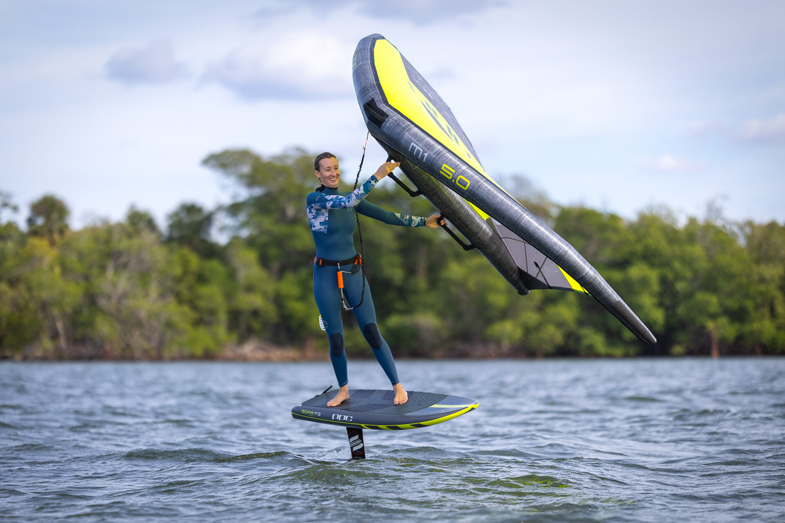
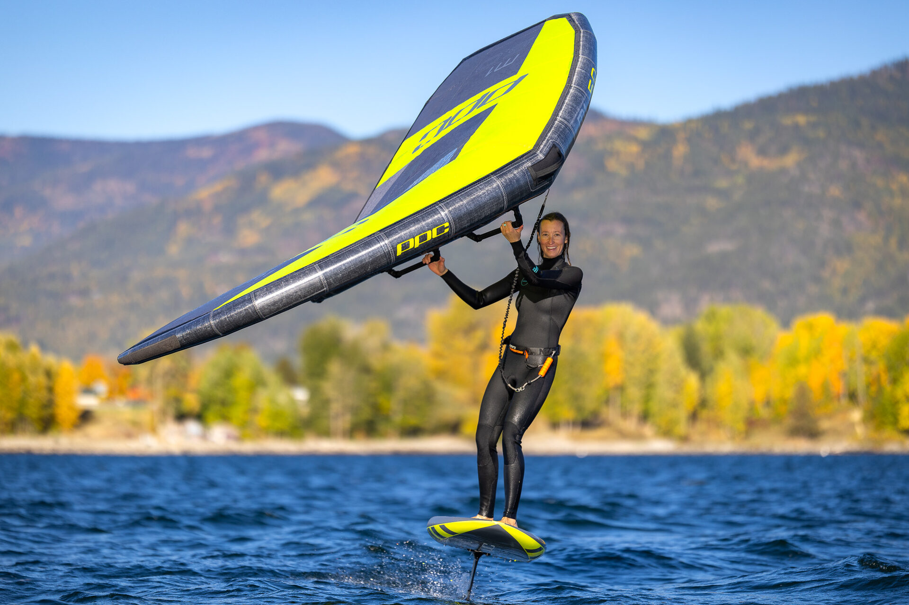
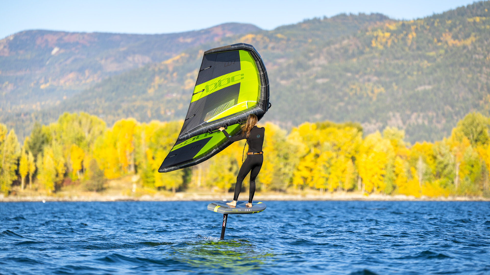

중급 progression — Jibe · Tack · Upwind




안정적으로 떠오르고, jibe·tack를 시도하는 단계. 관건은 플라잉 시간 늘리기와 다음 wing/foil 선택입니다. M2 → M1-X로의 자연스런 진화.
현장에서 1:1 컨설팅 수백 건을 통해 수집한 가장 흔한 stuck point
Wing 플래그 아웃 응답성이 둔하면 손목이 늦음. 더 반응성 좋은 wing(M1-X) + 짧은 mast(84cm)로 타이밍 개선
Wing camber 부족 또는 foil AR이 낮음. M1-X + FW 790 (또는 80kg+ 라이더는 FW 900) 조합이 한국 중급 표준 셋업
입문자용 윙은 리치가 다소 느슨하여 드레깅이 심해 체력소모가 많습니다. 가벼운 ExoPE-85 fabric의 M1-X로 1시간 이상 편한 라이딩 가능
테이크 오프 이후부터는 여분의 부력이 오히려 저항으로 작용합니다. 한 사이즈 작은 보드로 업그레이드 고려
미풍에서 부상이 어렵다면 윙이나 포일을 한 사이즈 업그레이드 권장
입문 단계의 관용적인 셋업은 jibe·tack 단계에서 응답성 부족으로 변합니다. wing은 더 반응성 좋게, mast는 더 길게 — 다만 foil은 너무 빨리 작은 걸로 바꾸면 안 됩니다.
이 단계의 가장 흔한 실수는 너무 빨리 작은 사이즈의 포일로 교체하는 것과 반응이 너무 느린 윙을 계속 사용하는 것 두 가지입니다.
84cm 진입 풀 강의 + Apparent Wind 원리 프리미엄
피칭 모멘텀 대응 + 겉보기 바람(Apparent Wind) 원리 — 참바람(true wind)과 겉보기 바람의 차이가 라이딩을 어떻게 바꾸는지 풀 강의. 회원가입 + 장비 등록으로 액세스 코드 (현재 무료)
액세스 코드 받기M1-X 중심의 반응성 좋은 셋업. 본인 진입할 컨디션에 맞춰 골라보세요
Jibe·tack가 80%+ 성공하고 200시간 라이딩하면 자연스럽게 상급으로 진입합니다. 이 시점에 M1으로 upgrade를 고려하세요.
M1-X의 관용적 응답이 답답하게 느껴질 때 → M1의 단단한 프레임으로. 정밀 조작감·최고 속도
FW 790/900 → FW 680 (상급 진입). 또는 mast 84 → 96cm — 기울기 각도/swell 깊이 ↑
race-feel wing (Takoon VX Pro 2 freerace) 또는 정통 race wing (PPC FDS) 시도 — 강풍·race 영역으로 확장
83L → 63L volume 감소. 싯팅 스타트 가능 라이더 전용
50~100시간 라이딩 + jibe 시도 시점이 일반적. M2의 응답이 답답하다고 느낄 때가 정확한 timing. 그 전에 upgrade하면 학습이 더 어려워짐.
체중 60-75kg + 한국 일반 spot이라면 FW 790. 미풍 spot이거나 75kg 이상이면 FW 900. 한 사이즈만 고른다면 FW 790이 중급 다용도. FW 680 / 540 은 상급 영역 — 200시간+ 라이딩 후 진입 권장.
Jibe·tack 30%+ 성공이라면 OK. 그 전에는 76cm 유지가 안전. 84cm은 빨라진 속도가 만드는 피칭 모멘텀을 받아내는 첫 단계 — 같은 피칭 입력에도 포일이 수면 아래에서 회복할 시간을 주고, 기울기 각도가 깊어져 턴이 더 즐거워집니다.
대부분 wing 사이즈 부족. 같은 풍에서 한 사이즈 크게 해보세요. 그래도 안 되면 foil의 AR이 낮음 → FW 790 (또는 80kg+ 라이더는 FW 900) 으로 교체.
M1-X + FW 790 (790cm²) + Mast 84cm + Boom FS 83 + WIP Wing Impact Vest 50N + 3/2mm Wetsuit = 약 1,200만~1,800만원 (Flat·Speed/Hybrid 기준). Choppy·Wave 라이더는 Takoon Flow/Flare + Carbon HR 16mm 셋업으로 변경. 1:1 컨설팅으로 본인 spot에 맞춘 조합 추천 가능
표준 매트릭스에 demographic 보정이 적용된 별도 가이드
올림픽 3회 연속 단독 출전 · 3개국 윈드서핑 국가대표팀 코치 옥덕필 박사 + 국가대표 포뮬러 카이트 조수철 선수가 함께 운영하는 단무지공방의 1:1 컨설팅. 체중·spot·전문 분야 정확히 듣고 네 브랜드 큐레이션해 드립니다.